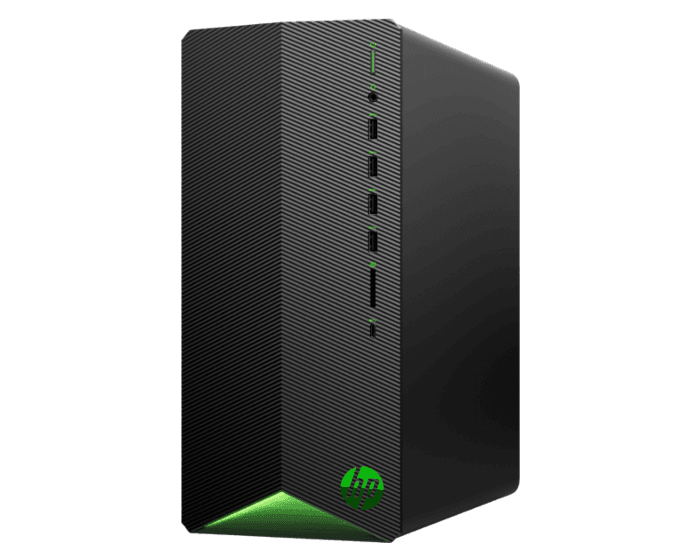

Desktop Gamer

Desktop HP Pavilion Gaming TG01-1008bla
SYSTEM CARACTERISTICS
- OS : Windows 10 Home 64
- Processor family : 10th Generation Intel® Core ™ i5 processor
- Form factor : MiniITX
MEMORY
- Memory, standard : 8 GB de SDRAM DDR4-2666 (1 x 8 GB)
- Memory slots : 2 DIMM
- Standard memory footnote number : [27] Up to 512 MB of main system memory can be allocated for graphics support for video.
STORAGE
- Description of the hard drive : 1TB 7200rpm SATA Hard Drive
- Storage type : Harddrive unit
- Cloud services : Dropbox
DISPLAY AND GRAPHICS
- Graphics : NVIDIA® GeForce® GTX 1650 (4GB GDDR5 dedicated)
EXPANSION CHARACTERISTICS
- Ports : 1 USB Type-C® with SuperSpeed 5 Gbps Signaling speed; 4 USB Type-A with SuperSpeed 5 Gbps Signaling speed; 1 headphone / microphone combo
- I / O port location : Rear
- Ports : 4 USB 2.0 Type-A; 1 audio input; 1 audio output; 1 microphone
- Expansion slots : 2 M.2; 1 PCIe x16; 1 PCIe x1
- Memory card device : HP 3-in-1 memory card reader
- Video connectors : 1 HDMI 2.0;1 DVI-D